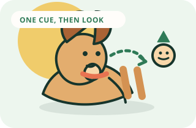

The foundation skill
Teach your dog’s name and attention
A name is not a command to stop everything. It is a cheerful invitation to check in with you.
Goal
What success looks like
Your dog looks toward your face after hearing their name once.
Visual method
See the sequence before you practice
The target is simple: one name cue, a quick look toward you, then an immediate reward.

Complete method
One session, start to finish
- 01
Set up
Choose 10 to 15 pea-sized treats your dog really enjoys.
- 02
Warm up
Repeat one skill your dog already knows for 30 to 60 seconds.
- 03
Teach
Say your dog’s name once in a bright, friendly voice. The instant their eyes move toward your face, mark with “Yes” and deliver a treat near your own feet or hand.
- 04
Reward
Mark the exact behavior, then deliver the reward within one second.
- 05
Repeat
Do three to five easy repetitions. If two cues are missed, make the task easier.
- 06
Advance
Your dog looks toward you after one name cue in at least eight of ten repetitions across three quiet rooms.
- 07
Finish
Use your release cue, reward one easy win, and end while your dog is still engaged.
Before you begin
Set up for an easy win
- Choose 10 to 15 pea-sized treats your dog really enjoys.
- Start in a quiet room with no other people, pets, or food on the floor.
- Keep your dog on a leash if they tend to wander or jump.
- Decide on one marker word, such as “Yes,” and use it consistently.
Step by step
How to teach it
- 01
Build a positive name association
Say your dog’s name once in a bright, friendly voice. The instant their eyes move toward your face, mark with “Yes” and deliver a treat near your own feet or hand.
- 02
Reset between repetitions
Toss a treat a few feet away so your dog moves, then wait for them to turn back. Say the name once again and reward the eye contact.
- 03
Add one small distance
Repeat from one step farther away on five easy trials. If your dog does not look on the first try, move closer instead of repeating the name.
- 04
Practice in another room
Move to a different quiet room and begin with the easiest version again. New locations make even familiar skills feel new.
- 05
Use the name sparingly
During training, use the name when you can reward the response. Avoid repeating it when your dog is distracted; that teaches them to tune it out.
Success checkpoint
You are ready to add difficulty when…
Your dog looks toward you after one name cue in at least eight of ten repetitions across three quiet rooms.
When progress stalls
Common problems and fixes
My dog looks at the treat hand instead of my face.
Hold treats behind your back or in a closed pouch. Deliver the reward after the eye contact, not as a lure toward your face.
My dog only responds when I say the name loudly.
Return to a quiet room and a shorter distance. The goal is a normal speaking voice, not volume.
My dog hears the name but keeps sniffing.
Sniffing is strong reinforcement. Lower the distraction, increase the reward value, or practice after a sniff break.
Trainer note
Mark the instant your dog looks up, even if the look is brief. The timing of the marker is the lesson.